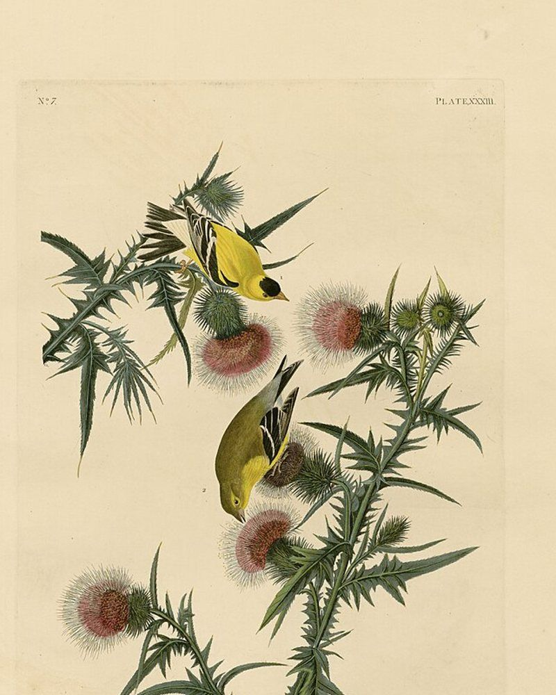
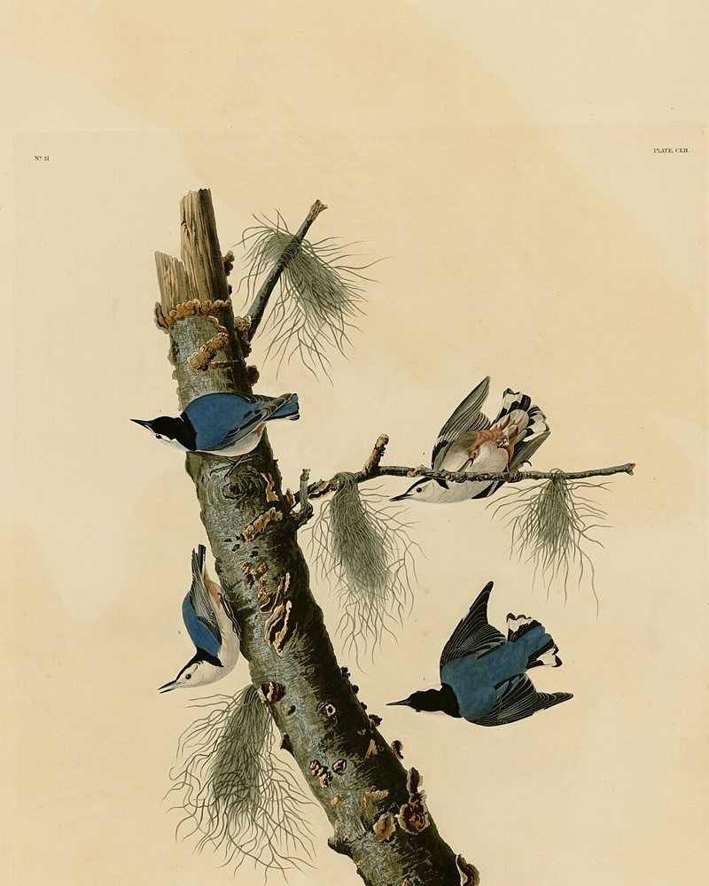
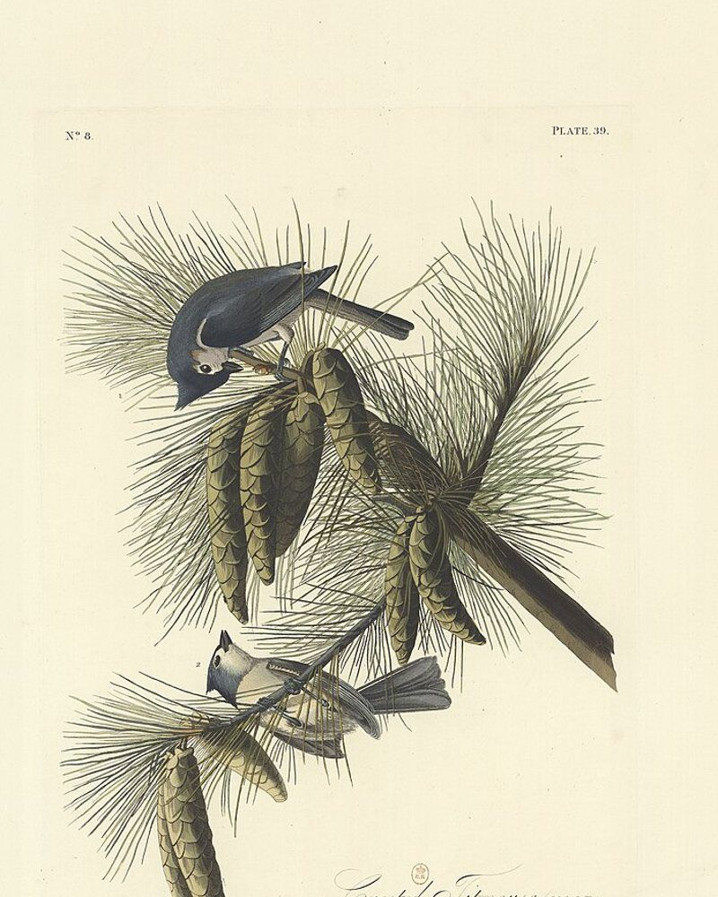
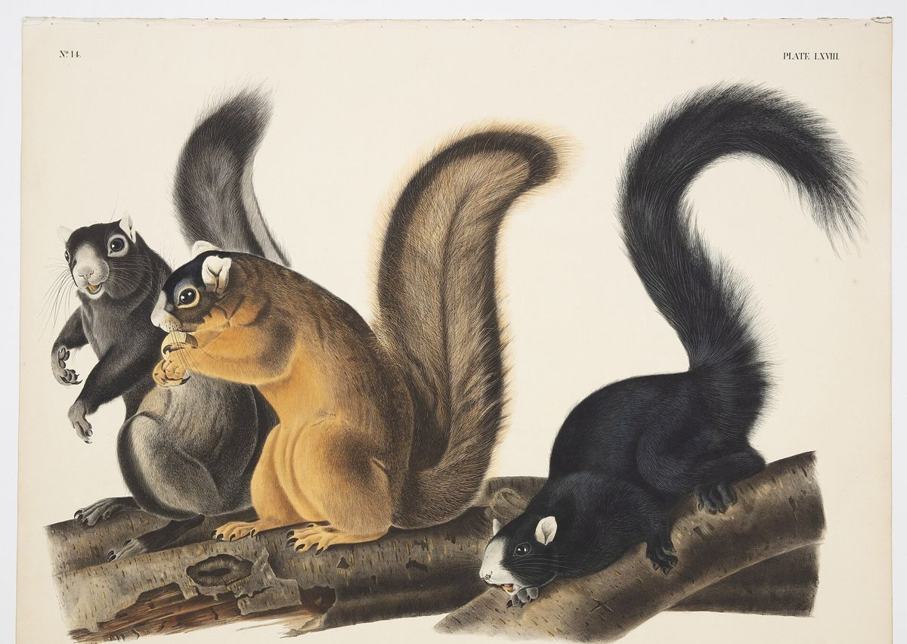

$Paid links. We earn a commission if you buy through links on this page, at no extra cost to you. As an Amazon Associate we earn from qualifying purchases.
Keep squirrels off the bird feeder.Give them their own spot.
Feeders that close when a squirrel hangs on, and a spot of their own so they leave yours alone. Budget, mid-range and premium picks where one passes our bar, chosen from makers' specs and owner reviews. We haven't used them ourselves.
Brome Squirrel Buster Standard
Mid-range. Closes its seed ports when a squirrel hangs on (maker's description).
Who comes to the feeder
Seven birds and one heavy guest.
Backyard feeder birds weigh between a few nickels and a deck of cards. A squirrel weighs more than all of them together, and that gap is what a squirrel-resistant feeder uses.






Typical adult weights, rounded (Cornell Lab, All About Birds); squirrel about 400-600 g. Plates: J. J. Audubon, The Birds of America and The Viviparous Quadrupeds of North America, public domain.
How they work
Weight is the whole trick.
These feeders close when something heavy hangs on: a shroud drops over the seed ports (maker's description). Pick who lands.


11 g
A black-capped chickadee weighs about as much as 2 US nickels.
Light enough to eat.The ports stay open.
Typical adult weights, rounded: chickadee 9-14 g, goldfinch 11-20 g, cardinal 42-48 g (Cornell Lab, All About Birds); eastern gray squirrel about 400-600 g. A US nickel weighs 5 g.
Squirrel-resistant feeders
The problem: squirrels empty the feeder.
A feeder squirrels can't empty.
Weight-activated feeders: when a squirrel hangs on, a shroud drops and closes the seed ports (maker's description). Birds are light enough to keep eating.

-
Budget pick
Brome Squirrel Buster Mini
Suits small yards and balconies: the smallest of the line, same closing shroud.
Trade-off: holds less seed, so more refills. One owner reports the plastic aging after a couple of years.
-
Mid-range pick
Brome Squirrel Buster Standard
Suits most yards: the same mechanism in a mid-size feeder.
Trade-off: holds less seed than the Plus and has fewer extras.
-
Premium pick
Brome Squirrel Buster Plus
Suits big yards and cardinal fans: about 5 lb of seed, 6 ports and a cardinal ring (maker's description).
Trade-off: it's the biggest and priciest of the line, and a pole needs a separate adaptor.
Finches and chickadees
The problem: a yard full of small birds, and squirrels too.
For a busy yard of small birds.
More ports, still squirrel-resistant.
-
Budget pick
Nothing has passed our bar here yet.
-
Mid-range pick
Brome Squirrel Solution200
Suits finches, chickadees and other small birds: 6 ports, weight-activated.
Trade-off: owners say bigger birds like cardinals find its perches small.
-
Premium pick
Brome Squirrel Buster Legacy
Suits people who want a more decorative feeder with the same squirrel-resistant mechanism.
Trade-off: you pay more for the look, not for a different mechanism.

Team Both
The problem: you like the squirrels too.
Give the squirrels their own spot.
Some people keep the squirrels off the bird feeder and set up a separate squirrel spot well away from it, so both get fed.
- Budget pick
No squirrel feeder has passed our bar yet. We're checking some now.
- Mid-range pick
Nothing listed until one passes.
- Premium pick
Nothing listed until one passes.
The questions people ask
Will it work for me?
The worries that come up most, answered from makers' instructions and bird groups' guidance.
Will a cardinal close it?
The Squirrel Buster Plus can be set for it. Brome says the Plus is weight-adjustable: you loosen the spring to let heavier birds like cardinals feed, or tighten it to keep them out.
If cardinals close the ports at your setting, Brome's instructions show how to adjust it. The Plus also has a cardinal ring to perch on. The Solution200 has small perches that owners say cardinals find awkward.
Source: Brome Bird Care support pages.
Which seed should I start with?
Sunflower. Cornell Lab's guide calls sunflower the seed that draws the widest variety of birds, and the mainstay of most backyard feeders. Black-oil sunflower is a common pick.
Source: All About Birds, "Feeding Birds: a Quick Guide to Seed Types".
Why did the birds vanish in the fall?
Usually because there's plenty of wild food. Feeders are only a small part of a bird's diet. In fall, plants have gone to seed and shrubs are full of fruit, so birds visit feeders less. Cornell Lab's FeederWatch team calls this normal and says birds come back once cold weather uses up the wild food.
Source: Cornell Lab of Ornithology, Project FeederWatch answers.
What about raccoons and rats?
Spilled seed is what draws them. Rake up dropped seed and hulls under the feeder. If raccoons keep coming, take the feeder in at night. Seed blends with cheap filler leave more waste on the ground, so plain sunflower helps here too.
None of the feeders on this page are sold as raccoon-proof.
Buying for a bird lover?
Gift it by their yard.
You don't need to know birds. Pick the line that sounds like them.
- Small yard or balcony
The Squirrel Buster Mini: the smallest of the line, same closing shroud.
See the Mini - Squirrels raid everything
The Squirrel Buster Standard, or the Plus for a big yard and cardinals.
See Standard and Plus - Loves finches
The Squirrel Solution200: 6 ports for small birds.
See the Solution200
How we pick
Checked before it's listed.
Picks checked November 10, 2026. Prices change, so check them on Amazon. No feeder is fully squirrel-proof.
Rated by many
Every pick has strong, long-running ratings from many buyers.
Complaints read
We read owner complaints and recall lists for safety problems, including anything that could hurt birds, before listing it.
Honest gaps
We haven't used these ourselves; the reasons come from maker specs and public owner reviews. If nothing passes in a tier, we leave it empty.
The problem: they climb the pole or jump on.
Stop the climb.
Pole baffles: right now almost none meet our quality bar, so we list none. The free fix still works, and it comes down to two numbers.
Email updates
New feeder picks, by email
We add and swap feeders as better ones show up. Leave your email and we'll tell you when this page changes. Our emails link back to this page, never straight to a store.